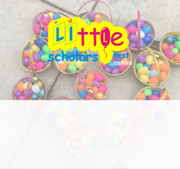
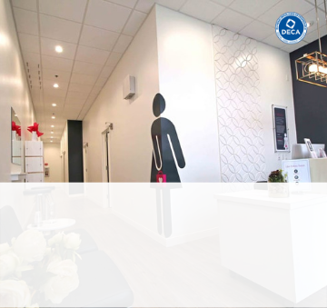
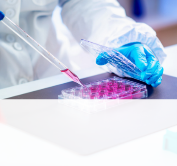
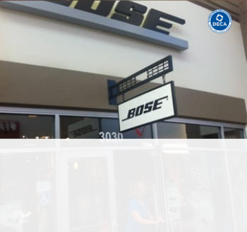

My Projects Portfolio
Throughout high school and now college, I have been a part of numerous passion projects in divergent fields such as technology, finance, biotechnology, business and consulting, and hackathons!

Little Scholars Nest Preschool Website
A parent-friendly preschool website | 2018

LunchBOX Waxing Salon Consulting Plan
A data driven B2C consulting proposal | 2018

Research on Myo-Inositol-1-Phosphate
A biotech research study on Duckweed | 2017

Skills to Save Bills
A financial literacy promotion campaign for students in middle and high school | 2017

Local BOSE Store Consulting Plan
A generation-focused consulting plan | 2016